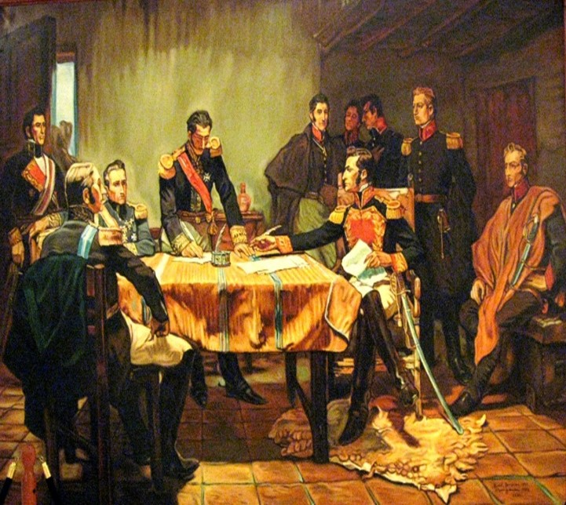

<<!DOCTYPE html>
    <html lang="es">

    <head>
        <meta charset="UTF-8">
        <meta name="viewport" content="width=device-width, initial-scale=1.0">
        <title>Integrantes - Historia de Colombia</title>
        <link href="https://cdnjs.cloudflare.com/ajax/libs/tailwindcss/2.2.19/tailwind.min.css" rel="stylesheet">
    </head>

    <body class="bg-gray-100">
        <nav class="bg-red-700 text-white shadow-lg">
            <div class="container mx-auto px-4 py-3">
                <div class="flex justify-between items-center">
                    <h1 class="text-2xl font-bold">Integrantes del Proyecto</h1>
                    <a href="index.html"
                        class="bg-yellow-500 hover:bg-yellow-600 text-white px-4 py-2 rounded transition-colors">
                        Regresar a Inicio
                    </a>
                </div>
            </div>
        </nav>

        <main class="container mx-auto px-4 py-8">
            <h2 class="text-3xl font-bold text-center mb-8 text-gray-800">INTEGRANTES</h2>

            <!-- Nombres de los integrantes -->
            <div class="flex flex-col md:flex-row justify-center gap-8 mb-12">
                <div class="bg-white p-6 rounded-lg shadow-lg text-center">
                    <h3 class="text-xl font-bold text-gray-800">Gissell Dayana Rivas Palacios</h3>
                </div>
                <div class="bg-white p-6 rounded-lg shadow-lg text-center">
                    <h3 class="text-xl font-bold text-gray-800">Sofia Baron Rivas</h3>
                </div>
            </div>

            <!-- Carrusel de imágenes -->
            <div class="max-w-4xl mx-auto relative">
                <div class="overflow-hidden rounded-lg shadow-xl">
                    <!-- Contenedor de imágenes -->
                    <div id="carousel" class="flex transition-transform duration-500">
                        <div class="min-w-full">
                            
                        </div>
                        <div class="min-w-full">
                            
                        </div>
                        <div class="min-w-full">
                            
                        </div>
                        <div class="min-w-full">
                            
                        </div>
                    </div>

                    <!-- Botones de navegación -->
                    <button onclick="moveSlide(-1)"
                        class="absolute left-0 top-1/2 transform -translate-y-1/2 bg-black bg-opacity-50 text-white p-4 hover:bg-opacity-75 transition-opacity">
                        &#10094;
                    </button>
                    <button onclick="moveSlide(1)"
                        class="absolute right-0 top-1/2 transform -translate-y-1/2 bg-black bg-opacity-50 text-white p-4 hover:bg-opacity-75 transition-opacity">
                        &#10095;
                    </button>

                    <!-- Indicadores de posición -->
                    <div class="absolute bottom-4 left-1/2 transform -translate-x-1/2 flex space-x-2">
                        <button onclick="goToSlide(0)"
                            class="w-3 h-3 rounded-full bg-white opacity-50 hover:opacity-100 transition-opacity"></button>
                        <button onclick="goToSlide(1)"
                            class="w-3 h-3 rounded-full bg-white opacity-50 hover:opacity-100 transition-opacity"></button>
                        <button onclick="goToSlide(2)"
                            class="w-3 h-3 rounded-full bg-white opacity-50 hover:opacity-100 transition-opacity"></button>
                        <button onclick="goToSlide(3)"
                            class="w-3 h-3 rounded-full bg-white opacity-50 hover:opacity-100 transition-opacity"></button>
                    </div>
                </div>
            </div>

            <!-- Botón de volver a inicio -->
            <div class="flex justify-center mt-12">
                <a href="inicio.html"
                    class="bg-red-700 hover:bg-red-800 text-white px-8 py-3 rounded-lg shadow-lg transform hover:scale-105 transition-all duration-300 flex items-center space-x-2">
                    <svg xmlns="http://www.w3.org/2000/svg" class="h-5 w-5" viewBox="0 0 20 20" fill="currentColor">
                        <path fill-rule="evenodd"
                            d="M9.707 16.707a1 1 0 01-1.414 0l-6-6a1 1 0 010-1.414l6-6a1 1 0 011.414 1.414L5.414 9H17a1 1 0 110 2H5.414l4.293 4.293a1 1 0 010 1.414z"
                            clip-rule="evenodd" />
                    </svg>
                    <span>Volver a Inicio</span>
                </a>
            </div>
        </main>

        <footer class="bg-blue-700 text-white mt-8">
            <div class="container mx-auto px-4 py-6">
                <div class="text-center">
                    <p>&copy; 2024</p>
                </div>
            </div>
        </footer>

        <script>
            let currentSlide = 0;
            const totalSlides = 4;
            const carousel = document.getElementById('carousel');

            function moveSlide(direction) {
                currentSlide = (currentSlide + direction + totalSlides) % totalSlides;
                updateCarousel();
            }

            function goToSlide(slideIndex) {
                currentSlide = slideIndex;
                updateCarousel();
            }

            function updateCarousel() {
                carousel.style.transform = `translateX(-${currentSlide * 100}%)`;
                updateIndicators();
            }

            function updateIndicators() {
                const indicators = document.querySelectorAll('.bottom-4 button');
                indicators.forEach((indicator, index) => {
                    indicator.style.opacity = index === currentSlide ? '1' : '0.5';
                });
            }

            // Auto-advance slides
            setInterval(() => moveSlide(1), 5000);

            // Initial indicator update
            updateIndicators();
        </script>
    </body>

    </html>